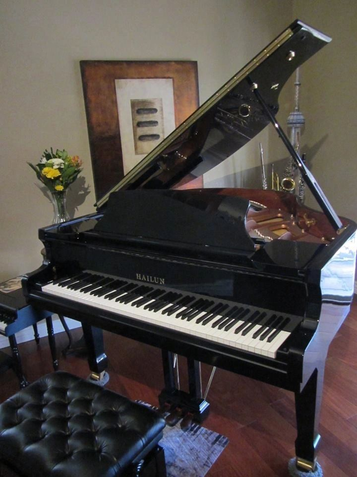

Min hobby är att spela piano.
På pianot spelar jag musikstil som heter "Ragtime".
När jag spelar piano så brukar jag läsa noter och sedan memorisera låtarna i huvudet.
Jag tycker att piano är kul dels för att jag tycker om musikstilen, men också för att det är utmanande och det
är jätte roligt när du klarar av något som du tänker att du inte kunde. Här kommer en video på ett piano: